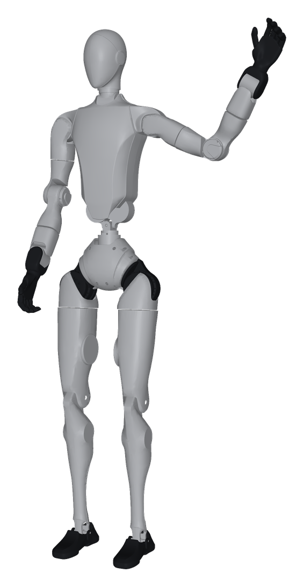
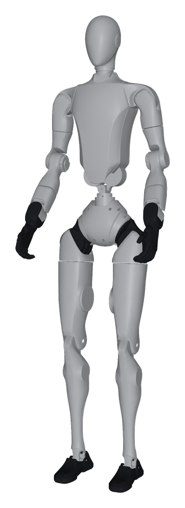
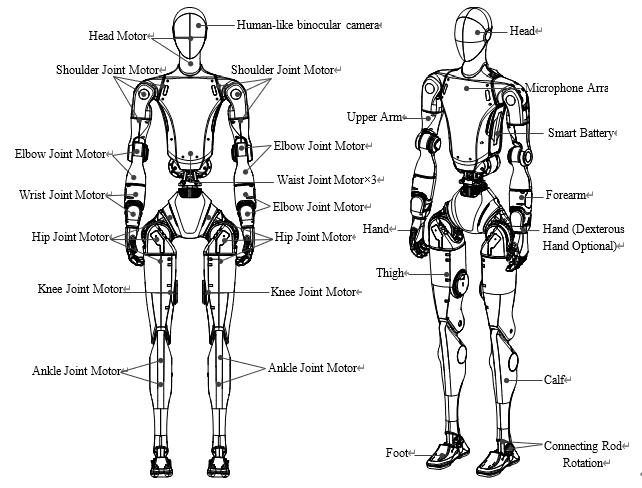
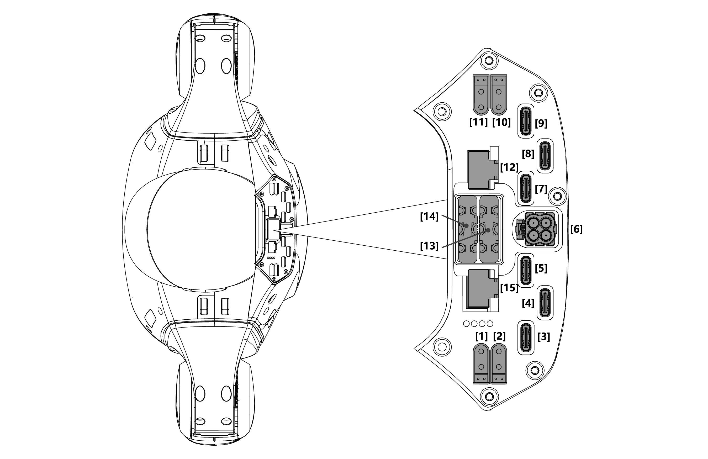
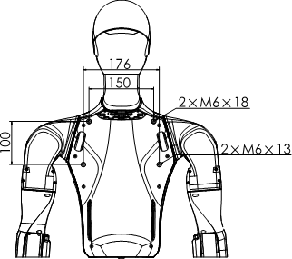
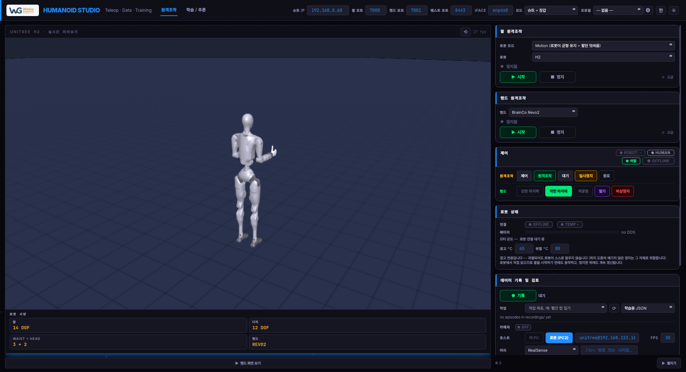

Unitree H2
휴머노이드
Intel PC2 + Jetson Thor PC3
전원 투입과 리모컨 조작, 시작 · 종료 순서, 온보드 컴퓨터와 등판 인터페이스, 손 · 음성 · 카메라 하드웨어, 그리고 WeGo Humanoid Studio 소개까지 H2를 안전하게 운용하는 데 필요한 내용을 담았습니다. SDK 개발은 별도의 Unitree H2 개발 설명서에 있습니다.

이 설명서에 대하여
| 로봇 | Unitree H2 (WeGo 보유 2대) · PC1 운동 제어 + PC2 Intel 개발 컴퓨터 + PC3 Jetson Thor |
| 근거 문서 | Unitree 문서 센터 H2 SDK Development Guide 본문 22쪽 (목차 항목 29개, 2026-11-06 수집). 앱 연결은 Unitree G1 User Manual V1.0(같은 Unitree Explore 앱)과 WeGo 입고 검수 절차. |
| 실측 자료 | WeGo 보유 H2 2대의 SSH 점검 기록 (2026-10-26 ~ 10-30).
2026-11-16 추가: WeGo 보유 H2 EDU 펌웨어 V1.0.2.6 → V1.0.3 업데이트와 rt/arm_sdk 머리 · 허리 시험 (2026-11-16, 개발 설명서 5장) |
| 소프트웨어 | WeGo Humanoid Studio (화면은 2026-11-06, 로봇 미연결 상태로 캡처) |
| 함께 보는 책 | Unitree H2 개발 설명서 (개발 환경 · DDS · 저수준 · 고수준 제어 · 음성 · 영상 · 손) |
| 판 | 한국어판 · 2026.11.26 |
| 문의 | go.support@wego-robotics.com |
본문의 문서 표시는 Unitree 공식 문서의 내용이고, 실측 표시는 WeGo 보유 장비에서 직접 확인한 값입니다. 두 값이 다를 때는 실측값을 우선하되, 펌웨어가 바뀌면 다시 확인하십시오.
이 문서에는 Unitree가 공개한 로봇 PC의 공장 기본 계정과 비밀번호가 실려 있습니다.
로봇을 외부 네트워크에 연결하기 전에 passwd로 기본 비밀번호를 바꾸십시오.
© WeGo Robotics. 표지와 그림 2의 H2 이미지는 Unitree가 공개한 URDF 메시를 MuJoCo로 렌더링한 것입니다. 그림 1 · 그림 6의 도식과 그림 7의 Studio 화면은 WeGo가 만들었고, 그 밖의 기술 도면과 화면은 Unitree Robotics 문서에서 가져왔습니다.
목차
- 01시스템 구성
- 02중요 안전 수칙
- 03하드웨어와 관절
- 04온보드 컴퓨터와 접속 계정
- 05리모컨과 운용 모드
- 06시작 · 종료 순서앱 연결 (AP 모드 · Wi-Fi 모드) 포함
- 07개발 안내
- 08센서 · 음성 · 카메라 · 손
- 09WeGo Humanoid Studio 미리보기
- 10문제 해결
- 부록빠른 참조
시스템 구성
H2는 31자유도 풀사이즈 휴머노이드입니다. 보행 · 균형은 비공개 운동 제어 컴퓨터(PC1)가 맡고, 사용자의 프로그램은 개발용 컴퓨터(PC2 Intel, PC3 Jetson Thor) 또는 외부 PC에서 DDS 네트워크로 로봇을 제어합니다.
모델 구분
| 항목 | H2 / H2 edu | H2 plus |
|---|---|---|
| 머리 스테레오 카메라 | PC1에 MIPI 4레인으로 연결 · 영상은 네트워크로 제공 | GMSL2 카메라 (PC3에 내부 배선) |
| PC3 Jetson Thor | 선택 사양 | 기본 사양 |
| 추가 GMSL 카메라 | PC3 장착 시 등판 [6]에 연결 (손목 카메라 등) | 등판 [6]에 연결 |
WeGo 보유 장비 실측
WeGo는 H2 2대를 보유합니다. 두 대 모두 PC2(Intel)와 PC3(Jetson Thor)를 함께 탑재합니다. 두 대의 IP · 호스트 이름 · 계정은 공장 출하값 그대로이며 서로 같습니다. 두 대를 구별하는 표시는 Thor 일련번호뿐입니다.
| 컴퓨터 | 상태 |
|---|---|
| PC1 .161 | 운동 제어 · 셸 접속 불가 · 웹 서비스 동작 |
| PC2 .162 | Intel i7-1355U · Ubuntu 22.04 RT · ROS 2 Humble |
| PC3 .163 | Jetson AGX Thor · JetPack 7.0 · CUDA 13.0 |
| PC4 .164 | 미장착 |
"Jetson Thor 버전"과 "Intel 버전"은 별도 모델이 아니라, 한 로봇 안의 두 개발 컴퓨터입니다.
펌웨어: WeGo 보유 H2 EDU 1대는 2026-11-16에 V1.0.2.6 → V1.0.3으로 업데이트했습니다(Unitree Explore 앱 › About Robot › Update, 업데이트 후 "already the latest version").
다른 1대는 아직 확인하지 않았습니다. V1.0.2.6에서는 rt/arm_sdk로 머리(29 · 30번)가 움직이지 않으므로, 개발 전에 About Robot에서 버전을 확인하고 업데이트하십시오.

h2_description)를 MuJoCo로 렌더링했습니다.세 가지 제어 경로
| 경로 | 용도 | 연결 |
|---|---|---|
| 리모컨 | 모드 전환, 보행, 시연 동작, 비상 댐핑. 현장 운용의 기본 | 무선 → PC1 |
| Unitree 앱 | 네트워크 설정(BLE), 영상 · 포인트 클라우드 · 상태(WebRTC), 내장 서비스 켜기/끄기 | BLE · Wi-Fi |
| SDK (DDS · ROS 2) | 사용자 프로그램. 고수준(보행 명령 · 팔 덧씌움)과 저수준(모든 관절 직접 제어) | LAN · 192.168.123.x |
H2는 사용자가 승인한 경우에만 Unitree 클라우드에 접속합니다. 클라우드는 MQTT로 고장 정보 · OTA 업데이트 · WebRTC 시그널링을 처리하고, TURN/STUN 서버로 원격 영상 연결을 중계합니다. 영상과 제어 트래픽은 서버에서 수집 · 분석하지 않는다고 문서에 명시되어 있습니다. 문서
중요 안전 수칙
H2는 사람 크기의 로봇입니다. 넘어지면 사람이 다치고 장비가 손상됩니다. 아래 수칙은 매 운용 전에 확인하십시오.
H2는 전원이 들어오면 리모컨을 만지지 않아도 내장 운동 제어 프로그램이 시작되어 속도 0 명령을 주기적으로 보냅니다.
이 상태에서 SDK로 rt/lowcmd를 보내면 두 명령이 충돌해 로봇이 떨립니다.
저수준 개발 전에는 반드시 디버그 모드로 들어가십시오 (5장).
디버깅 중에는 L2 + B, 운동 모드에서는 같은 버튼을 5초 누르면 댐핑으로 들어가 모든 모터가 능동 동작을 멈춥니다. 서 있던 로봇은 주저앉거나 넘어질 수 있습니다. 개발 · 시험 중에는 로봇을 보호 스탠드에 걸어 둔 상태로 운용하십시오.
운용 전 점검
- 스탠드 고정로봇을 보호 스탠드에 걸고, 스탠드 바닥의 회전 바퀴 4개를 모두 잠급니다.
- 작업 공간 확보로봇 주변을 비웁니다. 댄스 동작은 한 방향으로 최대 1.8 m의 공간이 필요합니다 (5장 댄스 표).
- 리모컨 담당 지정운용 중에는 리모컨을 든 사람을 한 명 정하고, 그 사람은 언제든 비상 댐핑(L2 + B)을 누를 수 있게 대기합니다.
- 보조자 배치잠금 서기 · 러닝 모드로 넘어갈 때는 사람이 로봇을 붙잡아 똑바로 세워 줘야 합니다 (6장).
- 디버그 모드 확인저수준 프로그램을 돌릴 때는 L2 + A로 디버그 모드인지 먼저 확인합니다.
- 작은 값부터프로그램으로 움직일 때는 작은 속도 · 게인부터 시작합니다 (개발 설명서).
등판 전원 출력 포트의 출력 합계는 500 W를 넘으면 안 됩니다 (배터리 직결 출력 [1]은 제외). 센서나 손을 추가로 달 때 확인하십시오.
촬영 · 공개 시 권장 사항 문서
- 다리 동작 프로그램에서는 무릎을 되도록 곧게 폅니다.
- 걸음 빈도를 낮추고, 제자리 걸음을 피합니다.
- 보행 중 두 발을 가깝게 모으고, 발끝이 벌어지지 않게 합니다.
- 연구 영상을 공개할 때는 연구실 이름이나 로고를 영상 전체에 잘 보이게 넣을 것을 Unitree가 권장합니다.
하드웨어와 관절
H2는 팔 7 × 2, 다리 6 × 2, 허리 3, 머리 2 — 모두 31개의 관절 모터를 가집니다. 관절 번호 · 가동 범위 · 좌표계는 개발 설명서 3장에 있습니다.

| 부위 | 자유도 | 구성 |
|---|---|---|
| 팔 (좌우 각각) | 7 | 어깨 3 · 팔꿈치 1 · 손목 3About H2 페이지는 3 · 2 · 2로 표기 |
| 다리 (좌우 각각) | 6 | 고관절 3 · 무릎 1 · 발목 2 |
| 허리 | 3 | yaw + 병렬 모터 A · B |
| 머리 | 2 | pitch · yaw |
| 합계 | 31 | 모터 31개 |
허리 roll · pitch와 발목은 모터 두 개가 함께 움직이는 병렬 기구입니다.
등판 전기 인터페이스

| 번호 · 커넥터 | 기능 |
|---|---|
| [1] GXT30(2)-M | 배터리 직결 출력 54 ~ 75.6 V (잔량에 따라 변동) / 10 A + RS-485 (→ PC2) |
| [2] · [11] GXT30(2)-M | 24 V / 10 A + CAN (→ PC2) |
| [10] GXT30(2)-M | 12 V / 10 A + RS-485 (→ PC2) |
| [3] USB-C | USB 3.0 호스트 · DP 1.4 · PD 3.0 (PC2 전용) |
| [4] USB-C | USB 3.0 · 5 V / 2 A (→ PC2). PC3 장착 시 USB 3.0 · DP 1.4 · PD 3.0 (→ PC3) |
| [5] USB-C | USB 3.0 · 5 V / 2 A (→ PC2). PC4 장착 시 USB 3.0 · DP 1.4 · PD 3.0 (→ PC4) |
| [6] GMSL | 영상 입력. PC3 장착 시에만 사용 (→ PC3) |
| [7] USB-C | USB 3.0 · 5 V / 2 A (PC2 전용) |
| [8] USB-C | USB 3.0 · 5 V / 2 A. PC3가 있으면 PC3, 없으면 PC2 |
| [9] USB-C | USB 3.0 · 5 V / 2 A. PC4가 있으면 PC4, 없으면 PC2 |
| [12] RJ45 | 기가비트 이더넷 · 192.168.123.x (개발 PC는 여기에 연결) |
| [15] RJ45 | 기가비트 이더넷 · 192.168.124.x |
| [13] · [14] 보드-와이어 | 손 인터페이스. 기본: 24 V / 10 A + RS-485 (→ PC2) + USB 2.0 (→ PC1). 선택: 24 V / 10 A + 100 Mbps 이더넷 (192.168.123.x) |
[13] · [14]를 RS-485 + USB로 쓸 때, [10]과 [13]이 같은 RS-485 버스이고, [1]과 [14]가 같은 버스입니다. [13] · [14]의 이더넷 핀 순서는 TX/N · RX/P · RX/N · TX/P이며 100 Mbps와 호환됩니다.

모델 파일
- URDF:
github.com/unitreerobotics/unitree_ros→robots/h2_description - 간이 STEP 모델: Unitree 문서 Access Resources의 내려받기 링크 (zip, 64 MB)
- 전체 사양:
unitree.com/H2
온보드 컴퓨터와 접속 계정
H2에는 PC1(운동 제어)이 기본으로 들어가고, 개발 컴퓨터는 PC2(Intel) · PC3(Jetson Thor) · PC4(Jetson Orin NX) 중 1 ~ 3대를 둘 수 있습니다. PC3는 H2 plus에서는 기본, H2 edu에서는 선택 사양이고, PC4는 선택 사양입니다. PC1은 Unitree 전용이라 접속할 수 없으며, 사용자 프로그램은 PC2 · PC3 · PC4 또는 외부 PC에서 실행합니다.
접속 정보 한눈에
| 컴퓨터 | IP ([12] / [15]) | 호스트 이름 | 계정 | 기본 비밀번호 |
|---|---|---|---|---|
| PC1 운동 제어 | 192.168.123.161 | — | 접속 불가 문서 | |
| PC2 Intel | .123.162 / .124.162 | unitree-H2-pc2 실측 | unitree | Unitree0408초기 펌웨어: Unitree#24226 |
| PC3 Jetson Thor | .123.163 / .124.163 | tegra-ubuntu | unitree | 123 |
| PC4 Orin NX | .123.164 / .124.164 | unitree-H2-nx4 실측 | unitree | 123시험 장비: Unitree0408 실측 |
위 비밀번호는 Unitree가 About H2 · Quick Development 문서에 공개한 공장 기본값입니다 문서. 로봇을 외부 네트워크에 연결하기 전에 먼저 passwd로 바꾸십시오.
ssh unitree@192.168.123.162 # PC2 (Intel) ssh unitree@192.168.123.163 # PC3 (Jetson Thor) ssh-copy-id unitree@192.168.123.163 # 이후 비밀번호 없이 접속
PC2 · Intel 개발 컴퓨터
| 항목 | Unitree 문서 | WeGo 장비 (실측) |
|---|---|---|
| CPU | Intel Core i7 · 10코어 12스레드 · 최대 4.7 / 4.8 GHz | Core i7-1355U · 논리 CPU 12개 |
| 메모리 | 16 GB / 32 GB LPDDR5-5200 듀얼 채널 | 사용 가능 30 GiB |
| GPU | Intel Iris Xe (최대 1.2 GHz) · OpenCL 3.0 | — |
| 저장 장치 | 500 GB 이상 | — |
| OS · 커널 | Ubuntu 22.04 | Ubuntu 22.04 · PREEMPT_RT 6.5.2-rt8 |
| ROS | — | ROS 2 Humble 설치됨 |
| 설치된 작업 공간 | — | brainco_hand_service (빌드됨, 자동 시작 안 됨 → 수동 실행), graph_pid_ws, slam_config |
| USB 카메라 | — | "Abham Image" UVC 2대 (USB 1c45:6200) → /dev/video0 ~ 3, 640×480 @ 30 fps. OpenCV 10/10 프레임 수신 확인 |
| 네트워크 특이점 | — | LAN MAC 주소가 부팅마다 바뀜 → DHCP 예약 · MAC 필터를 쓰지 말고 고정 IP 사용 |
PC3 · Jetson Thor 개발 컴퓨터
| 항목 | Unitree 문서 | WeGo 장비 (실측) |
|---|---|---|
| 모듈 | Jetson Thor T5000 · 2070 TFLOPS (FP4 sparse) | Jetson AGX Thor |
| CPU | Arm Neoverse-V3AE 14코어 · 2.6 GHz · L2 코어당 1 MB · 공유 L3 16 MB | 14코어 |
| GPU | Blackwell 2560코어 · 5세대 Tensor Core · MIG (TPC 10개) · 1.57 GHz | sm_110 |
| 메모리 | 128 GB LPDDR5X 256-bit · 273 GB/s | 사용 가능 122 GiB |
| 저장 장치 | NVMe 2 TB | 1.9 TB |
| 전력 | 40 ~ 130 W | — |
| 소프트웨어 | GMSL 카메라용 JetPack 7.0 · 7.1 지원 | Ubuntu 24.04 · 커널 6.8-tegra · JetPack 7.0 (b128) · CUDA 13.0 · TensorRT 10.13.3.9 · ROS 없음 |
| 카메라 | GMSL [6] 입력은 PC3 전용 | 연결된 카메라 없음 |
Orin에서 만든 TensorRT 엔진(.engine)은 Thor(sm_110)에서 로드되지 않습니다. ONNX 모델을 Thor로 옮겨 Thor에서 엔진을 다시 만드십시오. 실측
PC4 · Jetson Orin NX (선택)
WeGo가 점검한 H2 가운데 PC4까지 모두 단 장비(PC1 + PC2 + PC3 + PC4, 2026-11-26)에서 확인한 값입니다.
| 항목 | Unitree 문서 | 시험 장비 (실측) |
|---|---|---|
| 모듈 | Jetson Orin NX 16 GB · 100 TOPS · 10 ~ 25 W | NVIDIA Orin NX Developer Kit |
| CPU · GPU | Cortex-A78AE 8코어 2 GHz · Ampere GPU 1024코어(Tensor Core 32개) | 8코어 |
| 메모리 · 저장 장치 | 16 GB LPDDR5 · NVMe 2 TB | 사용 가능 15 GiB · 1.9 TB |
| 소프트웨어 | — | Ubuntu 20.04.5 · 커널 5.10.104-tegra · JetPack 5.1.1 (L4T 35.3.1) · CUDA 11.4 · 11.7 · ROS 2 Foxy · ROS 1 Noetic |
| 장치 | — | 카메라 · 손 · USB 직렬 어댑터 없음. 손목 카메라는 PC2, Dex3-1 손은 PC1에 연결 |
| 계정 | unitree / 123 | 123은 거부되고 PC2의 문서 기본값 Unitree0408로 접속됨. 같은 장비의 PC2는 초기 펌웨어 값 Unitree#24226이었음 |
PC1 · 운동 제어 컴퓨터
Intel Core i5 (10코어 12스레드, 최대 4.4 GHz) · 8 GB · 500 GB 이상. Unitree 운동 제어 전용이라 외부 접속이 막혀 있습니다.
192.168.123.161은 셸 접속이 되지 않고, 스테레오 영상 수신 주소를 바꾸는 웹 페이지(:9080)가 있습니다 (개발 설명서 6장).
머리 스테레오 카메라
| 항목 | H2 / H2 edu | H2 plus |
|---|---|---|
| 인터페이스 | PC1 · MIPI 4레인 | PC3 · GMSL2 |
| 센서 · 출력 | RGB 2개 · 2064 × 1552 · 12-bit RAW | 2개 · 2560 × 1984 · 10-bit RAW |
| 프레임 · 셔터 | 30 fps · 글로벌 셔터 | 30 fps · 글로벌 셔터 |
| 베이스라인 | 60 mm | 60.00 ± 0.5 mm |
| 화각 (수평 × 수직) | 156° × 116° | 140° × 102° (±3°) |
| 초점 거리 · 조리개 | 1.53 mm · F2.0 | 2.67 mm · F2.0 |
| 피사계 심도 | 0.15 m ~ ∞ (초점 0.4 m) | 0.4 m ~ ∞ |
| 동작 온도 | −20 ~ +60 ℃ | −30 ~ +70 ℃ |
리모컨과 운용 모드
리모컨은 모드 전환과 보행, 시연 동작, 비상 댐핑을 담당합니다. 버튼 배치는 펌웨어(Unitree 공식 통합 소프트웨어) 버전에 따라 다르며, 이 장은 현재 버전 1.0.3.1을 기준으로 합니다. Unitree Explore 앱(About Robot)에는 이 버전이 V1.0.3으로 표시되며, WeGo 기체를 V1.0.2.6에서 V1.0.3으로 올린 뒤 리모컨 조작이 아래 표대로 바뀌었습니다 실측.
운용 모드
| 모드 | 동작 |
|---|---|
| 영토크 (Zero Torque) | 모든 모터가 능동 동작을 멈추고, 손으로 흔들어도 저항이 없습니다. |
| 댐핑 (Damping) | 모든 모터가 능동 동작을 멈추고, 흔들면 뚜렷한 저항이 느껴집니다. 여기서 준비 모드로 넘어갈 수 있습니다. |
| 준비 · 잠금 서기 | 약 5초에 걸쳐 천천히 준비 자세를 잡습니다. |
| 운동 (Motion) | 리모컨으로 보행을 조작하는 모드입니다. |
| 연속 보행 | 속도 명령이 0이어도 계속 제자리 걸음을 합니다. |
| 서기 (Standing) | 스틱 명령이 0이면 걸음을 멈추고 섭니다. 명령이 들어오거나 외란으로 균형이 깨지면 다시 걸음을 뗍니다. |
| 디버그 (Debug) | 저수준 개발용. 내장 운동 제어 프로그램이 완전히 멈춥니다. 댐핑 또는 영토크 상태에서 L2 + R2로 들어갑니다. |
버튼 배치 — 펌웨어 1.0.3.1
★ 짧게 한 번 누르기 · ▲ 2초 길게 누르기. ①~⑦은 아래 표의 모드 번호입니다.
| 모드 | 버튼 | |
|---|---|---|
| 영토크Zero Moment | L2 + Y | ★ |
| ① 댐핑Damping | L2 + B | ★ |
| ② 잠금 서기Locked Standing | L2 + ↑ | ★ |
| ③ 눕기 ↔ 서기Lie ↔ Stand | L2 + X | ★ |
| ④ 상자 나오기Box Out | L1 + ↑ | ▲ |
| ④ 상자 들어가기Box In | L1 + ↓ | ▲ |
| ④ 이전 · 다음 동작Previous / Next | START 두 번 · SELECT 두 번 | ★ |
| ⑤ 러닝 모드Running Mode | R2 + A | ▲ |
| ⑥ 일반 모드Regular Mode | R1 + Y | ▲ |
| ⑦ 댄스 모드Dance Mode | R1 + B | ▲ |
| 인터랙션 (⑥ 일반 모드) | 버튼 |
|---|---|
| 악수Handshake | SELECT + A |
| 손 흔들기Wave Hand | SELECT + Y |
| 거절Reject | SELECT + X |
| 얼굴 앞 손 흔들기Face Wave | Y 두 번 |
| 오른손 키스Right Kiss | X 두 번 |
| 박수Clap | A 두 번 |
| 오른손 들기Right Raise | B 두 번 |
| 왼팔 근육 자랑Flex Left | ← 두 번 |
| 오른팔 근육 자랑Flex Right | ↑ 두 번 |
| 풀기Release | ↓ 두 번 |
| 걷기 ↔ 서기 전환Stepping / Standing | START |
| 댄스 (⑦ 댄스 모드) | 버튼 | 필요 공간 (원본 도표의 화살표 그대로) |
|---|---|---|
| 댄스 1 | R1 + ↑ | ↓ 0.6 m |
| 댄스 2 | R1 + ↓ | ← 0.6 m · ↑ 1 m |
| 댄스 3 | R1 + ← | → 1.6 m · ↓ 0.6 m |
| 댄스 4 | R1 + → | ↑ 0.5 m · ↓ 1.2 m · → 1.8 m |
- 댄스 중: START 두 번 → 댄스 동작 정지
- 인터랙션 동작 중: ↓ 두 번 → 동작 정지
- 운동 모드에서 L2 + B를 5초 누르면 댐핑 보호 모드로 들어갑니다.
화살표 방향은 Unitree 버튼 도표의 작은 아이콘을 읽은 것입니다. 처음 쓸 때 Unitree 문서 Remote Control Guide의 원본 도표와 대조하십시오.
디버그 모드 들어가기
- 로봇 매달기보호 스탠드에 걸고 발이 바닥에서 떨어지게 합니다.
- 댐핑으로 전환L2 + B
- 디버그 모드 진입L2 + R2. 내장 운동 제어 프로그램이 멈춥니다.
- 확인L2 + A를 누르면 진단 동작을 합니다. 교육 영상과 다르게 움직이면 L2 + R2를 여러 번 길게 눌러 다시 시도합니다.
- 비상시디버깅 중에도 L2 + B로 댐핑에 들어갑니다.
디버그 모드에 들어가면 고수준 보행 서비스(LocoClient), 팔 덧씌움(rt/arm_sdk), 오도메트리가 모두 꺼집니다.
이전 펌웨어 1.0.2.6
| 모드 | 버튼 |
|---|---|
| 영토크 | L2 + Y ★ |
| ① 댐핑 | L2 + B ★ |
| ② 잠금 서기 | L2 + ↑ ★ |
| ③ 일반 모드 1 | R1 + Y ▲ |
| ④ 일반 모드 2 | R2 + Y ▲ |
인터랙션 버튼은 1.0.3.1과 거의 같습니다. 오른팔 근육 자랑 대신 양팔 근육 자랑(↑ 두 번, Flex Both), 풀기 대신 양손 풀기(↓ 두 번, Hands Release)가 있고, 걷기 ↔ 서기 전환 버튼은 없습니다.
매단 상태 시작 순서: 전원 → ① → ② → ④ → 시연 → ① → 전원 끄기.
시작 · 종료 순서
H2는 시작 자세에 따라 세 가지 순서가 있습니다. 개발 · 시험에는 매단 상태 순서를 씁니다. 모든 순서는 펌웨어 1.0.3.1 기준이며, 원 번호는 5장 버튼 표와 같습니다. 휴대폰 앱 연결은 이 장의 D에 있습니다.
A-1. 매단 상태에서 시작 (기본)
- 스탠드에 걸기로봇을 보호 스탠드에 걸고 바퀴 4개를 잠급니다.
- 전원 켜기내장 제어기가 자동으로 시작됩니다.
- ① 댐핑L2 + B
- ② 잠금 서기L2 + ↑. 약 5초 동안 준비 자세를 잡습니다. 보조자가 로봇을 똑바로 붙잡아 줍니다.
- ⑤ 러닝 모드R2 + A 2초. 보조자가 로봇을 똑바로 세워 줍니다. 스탠드에서 내리는 시점과 방법은 교육 영상(전원 켜기 · 끄기)을 따르십시오.
- 운용 · 시연스틱으로 보행하고, ⑥ · ⑦로 모드를 바꿉니다.
A-2. 매단 상태로 종료
- 다시 매달기로봇을 스탠드에 다시 겁니다.
- ① 댐핑L2 + B
- 전원 끄기
B. 누운 상태
- 전원 켜기
- ① 댐핑L2 + B
- ③ 일어서기L2 + X
- 시연
- ③ 눕기L2 + X
- 전원 끄기
C. 상자에서
- 전원 켜기
- ① 댐핑L2 + B
- ④ 상자 나오기L1 + ↑ 2초
- 시연 · ⑤시연한 뒤 ⑤ 러닝 모드로 바꿉니다.
- ④ 상자 들어가기L1 + ↓ 2초
- 전원 끄기
D. 앱 연결 — AP 모드 · Wi-Fi 모드
로봇 상태 확인, 서비스 관리, 펌웨어 업데이트는 Unitree Explore 앱으로 합니다. 앱은 블루투스로 로봇을 찾아 네트워크를 설정한 뒤, 아래 두 방식 중 하나로 로봇에 연결합니다. Unitree 교육 영상 "네트워크 연결"(아래 표)도 같은 과정을 보여 줍니다.
| 방식 | 연결 | 알맞은 곳 |
|---|---|---|
| AP 모드 | 휴대폰이 H2가 내보내는 Wi-Fi 핫스팟에 직접 접속합니다 | 공유기가 없는 곳, 현장 시연 |
| Wi-Fi 모드 | H2와 휴대폰이 같은 공유기(Wi-Fi)에 접속합니다 | 연구실 · 사무실. 펌웨어 업데이트처럼 인터넷이 필요한 기능 |
- 앱 설치Unitree Explore 앱을
www.unitree.com/mobile/app/H2에서 설치합니다. 앱은 최신 버전으로 씁니다. - 블루투스 켜기휴대폰의 블루투스를 켜고, 휴대폰 설정에서 Unitree Explore 앱에 블루투스 권한을 허용합니다. 권한이 없으면 앱이 로봇을 찾지 못합니다.
- 로봇 켜기이 장의 순서대로 H2를 켜고 부팅이 끝날 때까지 기다립니다. 휴대폰은 로봇 가까이에 둡니다.
- 로봇 추가앱 홈 화면에서 [Add Robot]을 누르고 목록에서 H2를 고릅니다.
- 연결 방식 선택[AP Mode] 또는 [Wi-Fi Mode]를 고르고 앱의 안내를 따릅니다. AP 모드는 휴대폰 Wi-Fi 설정에서 H2의 핫스팟에 접속합니다. 핫스팟 이름에는 특수 문자와 공백을 쓰지 마십시오. Wi-Fi 모드는 H2가 접속할 공유기를 정하고, 휴대폰도 같은 공유기에 접속해 둡니다.
- 연결 확인연결되면 앱 홈 화면에 로봇 상태가 표시됩니다. 연결되지 않으면 10장 "문제 해결"의 앱 항목을 보십시오.
앱으로 확인할 것 · 바인딩 해제
| 항목 | 위치 | 확인 내용 |
|---|---|---|
| 서비스 상태 | [Device] → [Services] → [Service Status] | 주요 서비스가 켜져 있는지 봅니다. 디버그 모드나 SDK 작업 뒤 꺼진 서비스가 있으면 다시 켜야 리모컨으로 조작할 수 있습니다 |
| 로봇 정보 · 업데이트 | [Device] → [About Robot] | 모델과 펌웨어 버전, [Update]. 기술 지원에 문의하거나 원격 업데이트를 요청할 때 이 화면을 캡처해 보내 주십시오 |
| 바인딩 해제 | [About Robot] 맨 아래 [Unbind the robot] | 로봇과 앱 계정의 연결을 끊습니다. 로봇을 다른 사람에게 넘기기 전에 누릅니다 |
H2는 처음 연결한 앱 계정에 바인딩됩니다. 앱 목록에 로봇이 보이는데 연결(Connect)되지 않으면 다른 계정의 바인딩이 남아 있는 경우가 많습니다. 이전 사용자가 [Unbind the robot]을 누르거나, 이전 사용자를 찾을 수 없으면 S/N을 적어 기술 지원(go.support@wego-robotics.com)에 바인딩 해제를 요청하십시오.
무선 간섭이 심한 곳에서는 앱의 네트워크 설정이 실패하거나 연결이 끊길 수 있습니다. 이런 곳에서는 리모컨으로 운용하고, 앱 설정은 간섭이 적은 곳에서 미리 마치십시오.
교육 영상
Unitree 문서의 빠른 시작(Quick Start) 페이지에 영상 6개가 있습니다. 리모컨 페어링과 전원 버튼 조작은 영상으로만 설명되어 있습니다.
| 내용 | 파일 | 크기 |
|---|---|---|
| 개봉 · 포장 | 72a61d5a06ac4328a21684c233b42486.mp4 | 44 MB |
| 전원 켜기 · 끄기 | 6229a60f6970427eb8cbfcaaf60fd8ff.mp4 | 29 MB |
| 리모컨 페어링 | 2977ec9b2a70409a883ba16669da8f81.mp4 | 26 MB |
| 네트워크 연결 | dea35011d74944d7ae559e663ff9fa92.mp4 | 12 MB |
| 개발 · 디버깅 | cbfa2b7c2a1b4af9a4a6eb54299bd419.mp4 | 10 MB |
| 모터 캘리브레이션 | 400fc7a907294962a77359e0ca318e8d.mp4 | 33 MB |
개발 안내
H2는 사용자 프로그램으로 제어할 수 있습니다. 개발 환경, DDS 통신, 저수준 · 고수준 제어와 각 서비스 API는 별도의 Unitree H2 개발 설명서에 있고, 이 장은 시작 전에 알아야 할 것만 담았습니다.
- 매달기 — 관절을 움직이는 프로그램은 로봇을 보호 스탠드에 매달고 시험합니다.
- 디버그 모드 — 저수준 제어 전에는 L2 + R2로 들어가 L2 + A로 확인합니다 (5장). 내장 제어기와 명령이 충돌하면 로봇이 떨립니다.
- 비상 정지 대기 — 리모컨 담당자가 L2 + B(댐핑)를 누를 수 있게 대기합니다.
- 작은 값부터 — 속도 · 게인 · 가중치는 작은 값에서 시작해 천천히 올립니다.
할 수 있는 것 문서
| 구분 | 내용 | 개발 설명서 |
|---|---|---|
| 개발 환경 | 외부 개발 PC(Ubuntu 20.04 / 22.04) 또는 개발 컴퓨터 PC2 · PC3에서 unitree_sdk2(C++ · Python) · ROS 2 | 1장 |
| 통신 구조 | DDS 토픽(발행 / 구독)과 RPC 서비스, 전체 토픽 목록 | 2장 |
| 관절 · 상태 데이터 | 관절 번호 · 가동 범위, 상태 · 명령 메시지, 리모컨 원시 데이터 | 3장 |
| 저수준 제어 | 디버그 모드에서 모든 관절을 직접 제어 | 4장 |
| 고수준 제어 | 보행 · 모드 전환, 걷는 동안 팔 덧씌우기, 팔 동작, 오도메트리 | 5장 |
| 음성 · 영상 · 카메라 | 음성 인식 · 합성 · 조명, 머리 카메라 영상, 스테레오 · 깊이 영상, Jetson Thor GMSL 카메라 | 6장 |
| 다관절 손 | 손 종류별 연결과 DDS 제어 | 7장 |
연결 요약
- 케이블개발 PC를 등판 RJ45 포트 [12](192.168.123.x)에 연결합니다.
- 고정 IP개발 PC에
192.168.123.99/255.255.255.0을 줍니다. 로봇 PC 주소(.161 ~ .164)와 스테레오 영상 수신 주소(.170)는 피합니다. - 확인
ping 192.168.123.161이 응답하면 연결된 것입니다. 개발 컴퓨터 접속 계정은 4장에 있습니다.
센서 · 음성 · 카메라 · 손
H2의 음성 · 조명 하드웨어, 카메라 영상, 장착 가능한 다관절 손을 사용자 관점에서 정리합니다. 각 API와 영상 수신 절차는 개발 설명서 6 · 7장에 있습니다.
음성 · 조명 문서
| 항목 | 내용 |
|---|---|
| 조명 | RGB 조명 스트립 · 256색 |
| 스피커 | 8 Ω · 10 W (최대 12 W) |
| 마이크 | MEMS 4채널 · 간격 30 mm |
| 기능 | 오프라인 음성 인식(ASR), 오프라인 음성 합성(TTS, 중국어 · 영어), 볼륨 조절, 조명 색 제어 |
| 마이크 켜기 | 웨이크업 모드는 앱이나 리모컨으로 전환합니다. |
| 필요 버전 | vui_service ≥ 2.3.0.1, vui module ≥ 2.0.0.3 (낮으면 기술 지원에 업그레이드 요청) |
카메라 영상 문서
| 영상 | 내용 |
|---|---|
| 머리 카메라 영상 | H.264 멀티캐스트 · 1280 × 720 · 15 Hz. 720p JPEG 사진도 받을 수 있습니다. |
| 스테레오 · 깊이 영상 | stereo_patch_pc1 서비스가 보냅니다. 이 서비스는 자동으로 시작되지 않으므로 앱의 서비스 상태 화면에서 켭니다. 함께 동작하면 충돌하는 video_hub는 끕니다. |
| GMSL 카메라 (PC3) | H2 plus의 머리 스테레오 카메라와 손목 카메라 같은 GMSL 카메라는 Jetson Thor(PC3)에서 받습니다. |
다관절 손
손은 대부분 등판 [13] · [14] 커넥터로 전원과 통신을 받습니다. Wuji hand2는 전원을 [10](12 V)에서, Sharpa는 통신을 [12] · [15] RJ45로 받습니다. 가능하면 로봇과 함께 주문해 공장에서 장착 · 시험을 받으십시오. 따로 살 때는 "H2용"으로 주문해야 어댑터와 배선이 맞습니다.
| 손 | 전원 | 통신 | 연결 · 디버깅 |
|---|---|---|---|
| Dex1-1 그리퍼 고급형 | 24 V | RS-485 | PC2에서 직접 |
| Dex3-1 3지 (촉각형 포함) | 24 V | USB 2.0 | PC1 · DDS 인터페이스 |
| Dex5-1 · Dex5-1P 5지 | 24 V | USB 2.0 | PC1 · DDS 인터페이스 |
| BrainCo Revo2 (기본 · 촉각) | 24 V | RS-485 | PC2에서 직접 |
| BrainCo Revo3 U21B · U21T · U21V | 24 V | RS-485 | PC2에서 직접 |
| Inspire DFQ 시리즈 | 24 V | RS-485 | PC2에서 직접 |
| Inspire E2 시리즈 | 24 V | 100 Mbps 이더넷 | 스위치 · 아무 PC |
| Wuji hand2 | 12 V ([10]) | 100 Mbps 이더넷 | 스위치 · 아무 PC |
| Sharpa | 24 V | 1000 Mbps 이더넷 ([12] · [15]) | 스위치 · 아무 PC |
- Wuji hand2는 12 V 전용입니다. 24 V 포트에 연결하면 손이 손상됩니다.
- Sharpa는 손이 등판 이더넷 포트를 차지하므로, 개발 PC는 전기능 USB-C 포트에 이더넷 어댑터를 달아 연결합니다.
각 손의 DDS 제어 방법은 개발 설명서 7장에 있습니다.
- PC2의
brainco_hand_service는 빌드되어 있지만 자동 시작되지 않습니다. 손을 쓸 때 직접 실행합니다. - 기본 고무 손을 떼고 손을 다는 기계 작업은 Unitree 문서 Dexterous Hand Disassembly and Assembly Guide에 사진과 함께 있습니다.
WeGo Humanoid Studio 미리보기
WeGo Humanoid Studio는 사람의 동작으로 휴머노이드를 원격조작하고, 그 시연 데이터로 로봇 작업을 학습시키는 WeGo의 통합 제어 소프트웨어입니다. Unitree H2는 Studio의 로봇 목록에서 바로 선택할 수 있습니다.

주요 기능
| 기능 | 내용 |
|---|---|
| 원격조작 | 모션캡처 슈트 · 장갑 또는 VR 헤드셋으로 로봇의 팔과 손을 실시간으로 조작합니다. |
| 3D 미리보기 | 로봇에 명령을 보내기 전에 화면에서 로봇의 자세를 먼저 확인합니다. |
| 데이터 기록 | 원격조작으로 보여 준 시연을 학습용 데이터로 기록합니다. |
| 학습 · 실행 | 기록한 데이터로 로봇 작업을 학습시키고, 학습한 작업을 로봇에서 실행합니다. |
| 로봇 상태 | 연결 상태 · 배터리 · 모터 온도를 한 화면에서 확인합니다. |
설치, 장비 연결, 조작 방법과 안전 절차는 별도로 제공되는 WeGo Humanoid Studio 사용 가이드에 있습니다. H2와 연결해 처음 사용할 때는 WeGo 기술 지원팀과 함께 설정하십시오.
문제 해결
증상별 원인과 조치를 정리했습니다. 해결되지 않으면 Unitree 원본 문서를 확인한 뒤 기술 지원에 문의하십시오.
| 증상 | 원인 | 조치 |
|---|---|---|
ping 192.168.123.161 응답 없음 | 케이블이 [15]에 꽂힘, IP 대역 오류, 인터페이스 꺼짐 | 포트 [12] 사용, 192.168.123.x/24 고정 IP, nmcli con up h2 |
| 스테레오 영상이 안 보임 | video_hub 충돌, stereo_patch_pc1 꺼짐, 수신 주소가 .170, 방화벽 | 8장의 서비스 상태를 확인하고, 수신 주소 · 방화벽은 개발 설명서 6장을 따릅니다 |
| PC2 SSH 비밀번호 거부 | 초기 펌웨어 | Unitree#24226 시도 |
PC4 SSH에서 123 거부 | PC2의 문서 기본값으로 출고된 장비 실측 | Unitree0408 시도 |
| PC2 IP가 DHCP 예약대로 안 잡힘 | PC2 MAC이 부팅마다 바뀜 | 고정 IP 사용 |
| BrainCo 손이 움직이지 않음 | PC2의 brainco_hand_service가 꺼져 있음 | PC2에서 서비스 직접 실행 |
| 앱이 로봇을 찾지 못함 | 휴대폰 블루투스 꺼짐 · 앱에 블루투스 권한 없음 | 블루투스를 켜고 휴대폰 설정에서 앱에 블루투스 권한을 허용합니다 |
| 앱 목록에 로봇이 보이지만 연결되지 않음 ("Network exception") | 다른 계정에 바인딩된 상태 · 오래된 앱 | 이전 사용자가 [Unbind the robot]을 누르거나 기술 지원에 해제를 요청합니다. 앱을 최신으로 올리고 다른 연결 방식(AP ↔ Wi-Fi)과 다른 휴대폰으로도 시도합니다 |
| AP 모드 연결 실패 | 핫스팟 이름의 특수 문자 · 공백, 휴대폰이 멂 | 이름을 영문 · 숫자로 정하고 휴대폰을 로봇 가까이 둔 뒤 로봇과 앱을 다시 시작합니다 |
| 휴대폰 Wi-Fi 목록에 H2 핫스팟이 없음 | 로봇 내부 무선(AP) 이상 | 로봇을 다시 켭니다. 그래도 없으면 Wi-Fi 모드로 연결해 쓰고, 기술 지원에 점검을 요청합니다 |
| 앱 네트워크 설정 실패 · 연결이 자주 끊김 | 무선 간섭 (전시장 등) | 간섭이 적은 곳으로 옮겨 다시 설정합니다 |
Unitree 문서의 알려진 오류
| 위치 | 문서 내용 | 올바른 내용 |
|---|---|---|
| Architecture Description | "PC2 IP는 192.168.123.164, 비밀번호는 지원팀에 문의" — G1 문서를 복사한 문장 | PC2는 .162, 계정은 About H2 페이지에 공개. .164는 선택 사양 PC4 |
| Quick Development | 온보드 개발 컴퓨터(Ubuntu 22.04) 기본 계정 unitree / 123 | 123은 Jetson(PC3 · PC4) 비밀번호. Intel PC2는 Unitree0408. 실측: PC3는 123, PC4는 Unitree0408로 접속된 장비가 있음 (4장) |
| Remote Control Guide | 디버그 모드 설명에 "G1" | G1 문서에서 복사. H2에도 같은 버튼 적용 |
빠른 참조
접속 정보
| 대상 | 주소 | 계정 / 비밀번호 |
|---|---|---|
| PC2 Intel | 192.168.123.162 | unitree / Unitree0408 (초기: Unitree#24226) |
| PC3 Thor | 192.168.123.163 | unitree / 123 |
| PC4 Orin NX (선택) | 192.168.123.164 | unitree / 123 (거부되면 Unitree0408) |
| PC1 (확인용) | 192.168.123.161 | ping · :9080 웹 설정만 |
| 개발 PC | 192.168.123.99/24 | 등판 포트 [12] |
리모컨 핵심
| 댐핑 (비상) | L2+B (운동 중 5초) |
| 영토크 | L2+Y |
| 잠금 서기 | L2+↑ |
| 러닝 모드 | R2+A ▲ |
| 디버그 진입 | L2+R2 |
| 디버그 확인 | L2+A |
| 댄스 정지 | START 두 번 |
| 인터랙션 정지 | ↓ 두 번 |
시작 · 종료 (매단 상태)
- 스탠드에 걸고 바퀴 잠금
- 전원 켜기
- ① 댐핑 L2+B
- ② 잠금 서기 L2+↑ (보조자)
- ⑤ 러닝 R2+A ▲ (보조자)
- 운용
- 다시 매달기 → ① 댐핑 → 전원 끄기
저수준 개발: 매단 상태 → 댐핑 → L2+R2 → L2+A